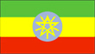
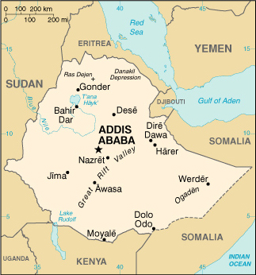

|
Ethiopia |  |
| Introduction Geography People Government Economy Communications Transportation Military Transnational Issues | ||
|  | ||
| Ethiopia | Introduction | Top of Page |
| Background: | Unique among African countries, the ancient Ethiopian monarchy maintained its freedom from colonial rule, one exception being the Italian occupation of 1936-41. In 1974 a military junta, the Derg, deposed Emperor Haile SELASSIE (who had ruled since 1930) and established a socialist state. Torn by bloody coups, uprisings, wide-scale drought, and massive refugee problems, the regime was finally toppled by a coalition of rebel forces, the Ethiopian People's Revolutionary Democratic Front (EPRDF), in 1991. A constitution was adopted in 1994 and Ethiopia's first multiparty elections were held in 1995. A two and a half year border war with Eritrea that ended with a peace treaty on 12 December 2000 has strengthened the ruling coalition, but has hurt the nation's economy. |
| Ethiopia | Geography | Top of Page |
| Location: | Eastern Africa, west of Somalia |
| Geographic coordinates: | 8 00 N, 38 00 E |
| Map references: | Africa |
| Area: |
total:
1,127,127 sq km
land: 1,119,683 sq km water: 7,444 sq km |
| Area - comparative: | slightly less than twice the size of Texas |
| Land boundaries: |
total:
5,311 km
border countries: Djibouti 337 km, Eritrea 912 km, Kenya 830 km, Somalia 1,626 km, Sudan 1,606 km |
| Coastline: | 0 km (landlocked) |
| Maritime claims: | none (landlocked) |
| Climate: | tropical monsoon with wide topographic-induced variation |
| Terrain: | high plateau with central mountain range divided by Great Rift Valley |
| Elevation extremes: |
lowest point:
Denakil Depression -125 m
highest point: Ras Dejen 4,620 m |
| Natural resources: | small reserves of gold, platinum, copper, potash, natural gas, hydropower |
| Land use: |
arable land:
12%
permanent crops: 1% permanent pastures: 40% forests and woodland: 25% other: 22% (1993 est.) |
| Irrigated land: | 1,900 sq km (1993 est.) |
| Natural hazards: | geologically active Great Rift Valley susceptible to earthquakes, volcanic eruptions; frequent droughts |
| Environment - current issues: | deforestation; overgrazing; soil erosion; desertification |
| Environment - international agreements: |
party to:
Biodiversity, Climate Change, Desertification, Endangered Species, Hazardous Wastes, Ozone Layer Protection
signed, but not ratified: Environmental Modification, Law of the Sea, Nuclear Test Ban |
| Geography - note: | landlocked - entire coastline along the Red Sea was lost with the de jure independence of Eritrea on 24 May 1993 |
| Ethiopia | People | Top of Page |
| Population: |
65,891,874
note: estimates for this country explicitly take into account the effects of excess mortality due to AIDS; this can result in lower life expectancy, higher infant mortality and death rates, lower population and growth rates, and changes in the distribution of population by age and sex than would otherwise be expected (July 2001 est.) |
| Age structure: |
0-14 years:
47.18% (male 15,647,675; female 15,442,348)
15-64 years: 50.03% (male 16,584,765; female 16,378,060) 65 years and over: 2.79% (male 834,825; female 1,004,201) (2001 est.) |
| Population growth rate: | 2.7% (2001 est.) |
| Birth rate: | 44.68 births/1,000 population (2001 est.) |
| Death rate: | 17.84 deaths/1,000 population (2001 est.) |
| Net migration rate: |
0.13 migrant(s)/1,000 population (2001 est.)
note: repatriation of Ethiopians who fled to Sudan for refuge from war and famine in earlier years is expected to continue for several years; small numbers of Sudanese and Somali refugees, who fled to Ethiopia from the fighting or famine in their own countries, continue to return to their homes |
| Sex ratio: |
at birth:
1.03 male(s)/female
under 15 years: 1.01 male(s)/female 15-64 years: 1.01 male(s)/female 65 years and over: 0.83 male(s)/female total population: 1.01 male(s)/female (2001 est.) |
| Infant mortality rate: | 99.96 deaths/1,000 live births (2001 est.) |
| Life expectancy at birth: |
total population:
44.68 years
male: 43.88 years female: 45.51 years (2001 est.) |
| Total fertility rate: | 7 children born/woman (2001 est.) |
| HIV/AIDS - adult prevalence rate: | 10.63% (1999 est.) |
| HIV/AIDS - people living with HIV/AIDS: | 3 million (1999 est.) |
| HIV/AIDS - deaths: | 280,000 (1999 est.) |
| Nationality: |
noun:
Ethiopian(s)
adjective: Ethiopian |
| Ethnic groups: | Oromo 40%, Amhara and Tigre 32%, Sidamo 9%, Shankella 6%, Somali 6%, Afar 4%, Gurage 2%, other 1% |
| Religions: | Muslim 45%-50%, Ethiopian Orthodox 35%-40%, animist 12%, other 3%-8% |
| Languages: | Amharic, Tigrinya, Oromigna, Guaragigna, Somali, Arabic, other local languages, English (major foreign language taught in schools) |
| Literacy: |
definition:
age 15 and over can read and write
total population: 35.5% male: 45.5% female: 25.3% (1995 est.) |
| Ethiopia | Government | Top of Page |
| Country name: |
conventional long form:
Federal Democratic Republic of Ethiopia
conventional short form: Ethiopia local long form: Ityop'iya Federalawi Demokrasiyawi Ripeblik local short form: Ityop'iya former: Abyssinia, Italian East Africa abbreviation: FDRE |
| Government type: | federal republic |
| Capital: | Addis Ababa |
| Administrative divisions: | 9 ethnically-based states (kililoch, singular - kilil) and 2 self-governing administrations* (astedaderoch, singular - astedader): Adis Abeba* (Addis Ababa); Afar; Amara, Binshangul Gumuz; Dire Dawa*; Gambela Hizboch; Hareri Hizb; Oromiya; Sumale; Tigray; YeDebub Biheroch Bihereseboch na Hizboch (Southern Nations, Nationalities, and Peoples Region) |
| Independence: | oldest independent country in Africa and one of the oldest in the world - at least 2,000 years |
| National holiday: | National Day (defeat of MENGISTU regime), 28 May (1991) |
| Constitution: | ratified December 1994; effective 22 August 1995 |
| Legal system: | currently transitional mix of national and regional courts |
| Suffrage: | 18 years of age; universal |
| Executive branch: |
chief of state:
President NEGASSO Gidada (since 22 August 1995)
head of government: Prime Minister MELES Zenawi (since NA August 1995) cabinet: Council of Ministers as provided for in the December 1994 constitution; ministers are selected by the prime minister and approved by the House of People's Representatives elections: president elected by the House of People's Representatives for a six-year term; election last held NA June 1995 (next to be held NA May 2001); prime minister designated by the party in power following legislative elections election results: NEGASSO Gidada elected president; percent of vote by the House of People's Representatives - NA% |
| Legislative branch: |
bicameral Parliament consists of the House of Federation or upper chamber (108 seats; members are chosen by state assemblies to serve five-year terms) and the House of People's Representatives or lower chamber (548 seats; members are directly elected by popular vote from single-member districts to serve five-year terms)
elections: last held 14 May 2000 (next to be held NA May 2005) election results: percent of vote - NA%; seats - OPDO 177, ANDM 134, TPLF 38, WGGPDO 27, EPRDF 19, SPDO 18, GNDM 15, KSPDO 10, ANDP 8, GPRDF 7, SOPDM 7, BGPDUF 6, BMPDO 5, KAT 4, other regional political groupings 22, independents 8; note - 43 seats unconfirmed note: irregularities and violence at a number of polling stations necessitated the rescheduling of voting in certain constituencies; voting postponed in Somali regional state because of severe drought |
| Judicial branch: | Federal Supreme Court (the president and vice president of the Federal Supreme Court are recommended by the prime minister and appointed by the House of People's Representatives; for other federal judges, the prime minister submits to the House of People's Representatives for appointment candidates selected by the Federal Judicial Administrative Council) |
| Political parties and leaders: | Afar National Democratic Party or ANDP [leader NA]; All-Amhara People's Organization or AAPO [KEGNAZ MATCH Neguea Tibeb]; Amhara National Democratic Movement or ANDM [TEFERA Walwa]; Bench Madji People's Democratic Organization or BMPDO [leader NA]; Benishangul Gumuz People's Democratic Unity Front or BGPDUF [leader NA]; Coalition of Alternative Forces for Peace and Democracy or CAFPD [Kifle TIGNEH Abate and BEYENE Petros]; Ethiopian Democratic Unity Party or EDUP [Lt. Gen. TESFAYE Gebre Kidan]; Ethiopian National Democratic Party or ENDP [FEKADU Gedamu]; Ethiopian People's Revolutionary Democratic Front or EPRDF [MELES Zenawi] (an alliance of the ANDM, OPDO, and TPLF); Gedeyo People's Revolutionary Democratic Movement or GPRDF [leader NA]; Gurange Nationalities Democratic Movement or GNDM [leader NA]; Kafa Shaka People's Democratic Organization or KSPDO [leader NA]; Kembata, Alabaa, and Tembaro or KAT [leader NA]; Oromo Liberation Front or OLF [DAOUD Ibsa Gudina]; Oromo People's Democratic Organization or OPDO [KUMA Demeksa]; Sidama People's Democratic Organization or SPDO [leader NA]; South Omo People's Democratic Movement or SOPDM [leader NA]; Tigrai People's Liberation Front or TPLF [MELES Zenawi]; Walayta, Gamo, Gofa, Dawro, Konta People's Democratic Organization or WGGPDO [leader NA]; dozens of small parties |
| Political pressure groups and leaders: | Southern Ethiopia People's Democratic Coalition; numerous small, ethnically based groups have formed since the defeat of the former MENGISTU regime in 1991, including several Islamic militant groups |
| International organization participation: | ACP, AfDB, CCC, ECA, FAO, G-24, G-77, IAEA, IBRD, ICAO, ICRM, IDA, IFAD, IFC, IFRCS, IGAD, ILO, IMF, IMO, Intelsat, Interpol, IOC, IOM (observer), ISO, ITU, NAM, OAU, OPCW, UN, UNCTAD, UNESCO, UNHCR, UNIDO, UNU, UPU, WFTU, WHO, WIPO, WMO, WToO |
| Diplomatic representation in the US: |
chief of mission:
Ambassador (vacant)
chancery: 3506 International Drive NW, Washington, DC 20008 telephone: [1] (202) 364-1200 FAX: [1] (202) 686-9857 |
| Diplomatic representation from the US: |
chief of mission:
Ambassador Tibor P. NAGY, Jr.
embassy: Entoto Street, Addis Ababa mailing address: P. O. Box 1014, Addis Ababa telephone: [251] (1) 550666 FAX: [251] (1) 551328 |
| Flag description: | three equal horizontal bands of green (top), yellow, and red with a yellow pentagram and single yellow rays emanating from the angles between the points on a light blue disk centered on the three bands; Ethiopia is the oldest independent country in Africa, and the colors of her flag were so often adopted by other African countries upon independence that they became known as the pan-African colors |
| Ethiopia | Economy | Top of Page |
| Economy - overview: | Ethiopia's economy is based on agriculture, which accounts for half of GDP, 90% of exports, and 80% of total employment. The agricultural sector suffers from frequent periods of drought and poor cultivation practices, and as many as 4.6 million people need food assistance annually. Coffee is critical to the Ethiopian economy, and Ethiopia earned $267 million in 1999 by exporting 105,000 metric tons. According to current estimates, coffee contributes 10% of Ethiopia's GDP. More than 15 million people (25% of the population) derive their livelihood from the coffee sector. Other exports include live animals, hides, gold, and qat. In December 1999, Ethiopia signed a $1.4 billion joint venture deal to develop a huge natural gas field in the Somali Regional State. The war with Eritrea forced the government to spend scarce resources on the military and to scale back ambitious development plans. Foreign investment has declined significantly. Government taxes imposed in late 1999 to raise money for the war depressed an already weak economy. The war forced the government to improve roads and other parts of the previously neglected infrastructure, but only certain regions of the nation benefited. Recovery from the war is mostly contingent on natural factors. A drought has continued into the end of 2000 and food relief is expected to be needed through mid-2001 at least. Ethiopia may receive Highly Indebted Poor Countries (HIPC) debt relief by the end of the year. |
| GDP: | purchasing power parity - $39.2 billion (2000 est.) |
| GDP - real growth rate: | 2% (2000 est.) |
| GDP - per capita: | purchasing power parity - $600 (2000 est.) |
| GDP - composition by sector: |
agriculture:
45%
industry: 12% services: 43% (1999 est.) |
| Population below poverty line: | NA% |
| Household income or consumption by percentage share: |
lowest 10%:
3%
highest 10%: 33.7% (1995) |
| Inflation rate (consumer prices): | 5% (2000 est.) |
| Labor force: | NA |
| Labor force - by occupation: | agriculture and animal husbandry 80%, government and services 12%, industry and construction 8% (1985) |
| Unemployment rate: | NA% |
| Budget: |
revenues:
$1 billion
expenditures: $1.48 billion, including capital expenditures of $415 million (FY96/97) |
| Industries: | food processing, beverages, textiles, chemicals, metals processing, cement |
| Industrial production growth rate: | NA% |
| Electricity - production: | 1.625 billion kWh (1999) |
| Electricity - production by source: |
fossil fuel:
3.08%
hydro: 96.92% nuclear: 0% other: 0% (1999) |
| Electricity - consumption: | 1.511 billion kWh (1999) |
| Electricity - exports: | 0 kWh (1999) |
| Electricity - imports: | 0 kWh (1999) |
| Agriculture - products: | cereals, pulses, coffee, oilseed, sugarcane, potatoes, qat; hides, cattle, sheep, goats |
| Exports: | $460 million (f.o.b., 1999) |
| Exports - commodities: | coffee, gold, leather products, oilseeds, qat |
| Exports - partners: | Germany 16%, Japan 13%, Djibouti 10%, Saudi Arabia 7% (1999 est.) |
| Imports: | $1.25 billion (f.o.b., 1999) |
| Imports - commodities: | food and live animals, petroleum and petroleum products, chemicals, machinery, motor vehicles |
| Imports - partners: | Saudi Arabia 28%, Italy 10%, Russia 7%, US 6% (1999 est.) |
| Debt - external: | $10 billion (1999 est.) |
| Economic aid - recipient: | $367 million (FY95/96) |
| Currency: | birr (ETB) |
| Currency code: | ETB |
| Exchange rates: |
birr per US dollar (end of period) - 8.3140 (December 2000), 8.3140 (2000), 8.1340 (1999), 7.5030 (1998), 6.8640 (1997), 6.4260 (1996)
note: since May 1993, the birr market rate has been determined in an interbank market supported by weekly wholesale auction |
| Fiscal year: | 8 July - 7 July |
| Ethiopia | Communications | Top of Page |
| Telephones - main lines in use: | 157,000 (1997) |
| Telephones - mobile cellular: | 4,000 (1999) |
| Telephone system: |
general assessment:
open wire and microwave radio relay system adequate for government use
domestic: open wire; microwave radio relay; radio communication in the HF, VHF, and UHF frequencies; two domestic satellites provide the national trunk service international: open wire to Sudan and Djibouti; microwave radio relay to Kenya and Djibouti; satellite earth stations - 3 Intelsat (1 Atlantic Ocean and 2 Pacific Ocean) |
| Radio broadcast stations: | AM 5, FM 0, shortwave 2 (1999) |
| Radios: | 11.75 million (1997) |
| Television broadcast stations: | 25 (1999) |
| Televisions: | 320,000 (1997) |
| Internet country code: | .et |
| Internet Service Providers (ISPs): | 1 (2000) |
| Internet users: | 7,200 (1999) |
| Ethiopia | Transportation | Top of Page |
| Railways: |
total:
681 km (Ethiopian segment of the Addis Ababa-Djibouti railroad)
narrow gauge: 681 km 1.000-m gauge note: in April 1998, Djibouti and Ethiopia announced plans to revitalize the century-old railroad that links their capitals; since May 1998 Ethiopia has expended considerable effort to repair and maintain the lines |
| Highways: |
total:
24,145 km
paved: 3,290 km unpaved: 20,855 km (1998) |
| Waterways: | none |
| Ports and harbors: | none; Ethiopia is landlocked and was by agreement with Eritrea using the ports of Assab and Massawa; since the border dispute with Eritrea flared, Ethiopia has used the port of Djibouti for nearly all of its imports |
| Merchant marine: |
total:
11 ships (1,000 GRT or over) totaling 85,382 GRT/108,526 DWT
ships by type: cargo 6, container 1, petroleum tanker 1, roll on/roll off 3 (2000 est.) |
| Airports: | 86 (2000 est.) |
| Airports - with paved runways: |
total:
12
over 3,047 m: 3 2,438 to 3,047 m: 5 1,524 to 2,437 m: 3 914 to 1,523 m: 1 (2000 est.) |
| Airports - with unpaved runways: |
total:
74
over 3,047 m: 2 2,438 to 3,047 m: 7 1,524 to 2,437 m: 10 914 to 1,523 m: 35 under 914 m: 20 (2000 est.) |
| Ethiopia | Military | Top of Page |
| Military branches: |
Ground Forces, Air Force, Police, Militia
note: Ethiopia is landlocked and has no navy; following the independence of Eritrea, Ethiopian naval facilities remained in Eritrean possession and ships which belonged to the former Ethiopian Navy and based at Djibouti have been sold |
| Military manpower - military age: | 18 years of age |
| Military manpower - availability: | males age 15-49: 14,537,884 (2001 est.) |
| Military manpower - fit for military service: | males age 15-49: 7,581,815 (2001 est.) |
| Military manpower - reaching military age annually: | males: 703,625 (2001 est.) |
| Military expenditures - dollar figure: | $138 million (FY98/99) |
| Military expenditures - percent of GDP: | 2.5% (FY98/99) |
| Ethiopia | Transnational Issues | Top of Page |
| Disputes - international: | most of the southern half of the boundary with Somalia is a Provisional Administrative Line; as a result of the 12 December 2000 peace agreement ending a two year war with Eritrea, the UN will administer a 25-km wide temporary security zone within Eritrea until a joint boundary commission delimits and demarcates a final boundary; dispute over alignment of boundary with Eritrea led to armed conflict in 1998; a peace accord signed in December 2000 provides for UN-assisted arbitration and demarcation of the border |
| Illicit drugs: | transit hub for heroin originating in Southwest and Southeast Asia and destined for Europe and North America as well as cocaine destined for markets in southern Africa; cultivates qat (khat) for local use and regional export, principally to Djibouti and Somalia |
{kind=link}
{kind=link}